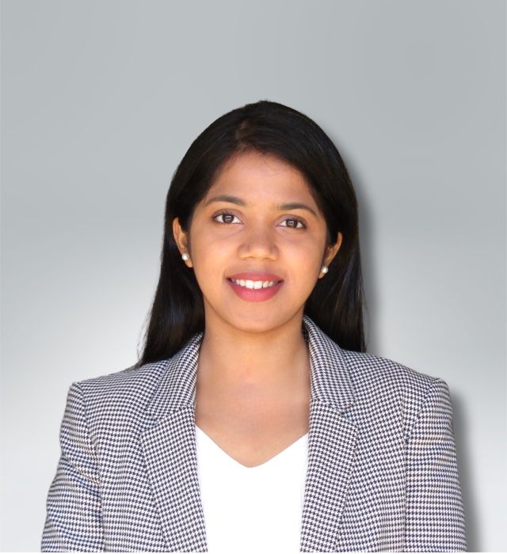

Anshu Gupta
University of California San Diego
I am a fourth-year PhD candidate in Computer Science and Engineering at the University of California San Diego, advised by Prof. Yatish Turakhia.
My research lies at the intersection of hardware–software co-design, high-performance computing, and computational genomics. I develop scalable and automated frameworks for analyzing data-intensive workloads, such as in computational genomics and bioinformatics, including GPU/CPU-parallelized methods for evolutionary tree inference, and FPGA-based acceleration of dynamic-programming algorithms across bioinformatics applications.
Before beginning my PhD, I worked for more than three years as a Digital Design Engineer at Analog Devices, where I gained experience in processor architecture evaluation, ASIC design, and chip tape-out. During my PhD, I interned at AMD Research and Advanced Development, working on FPGA-based emulation and performance characterization of AI hardware.
I collaborate with the Vertebrate Genomes Project consortium, researchers at the Scripps Institution of Oceanography, and the AMD Omics Group on accelerating bioinformatics workloads at scale. My research has resulted in open-source software used by researchers beyond our group and publications in PNAS and HPCA.
I received my M.S. in Computer Engineering from UC San Diego and my B.Tech. in Electronics and Telecommunication Engineering from IIEST Shibpur, India. As an undergraduate, I was a DAAD WISE Scholar at the University of Bremen, Germany.